出汁
長崎・枕崎産の鰹、いりこ、北海道産の昆布を丁寧に合わせ、夜の和食屋で培った出汁をベースに豚出汁を重ねました。やさしくすっきりとした中にも、深い旨みと上品な香りが広がります。
那覇・久米 昼は沖縄そば
夜の和食屋が、
昼に仕立てる一杯。
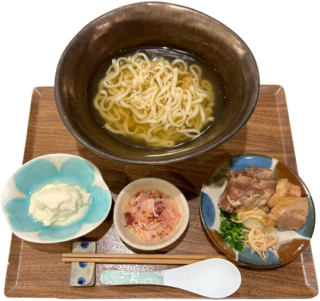
本ソーキ・三枚肉・やわらかゆし豆腐の贅沢盛りに、じゅーしー（小）がセットになった大満足の人気セット。
※「じゅーしー」は、沖縄風炊き込みご飯です。
※麺の大盛りは二百円増し。
一番人気
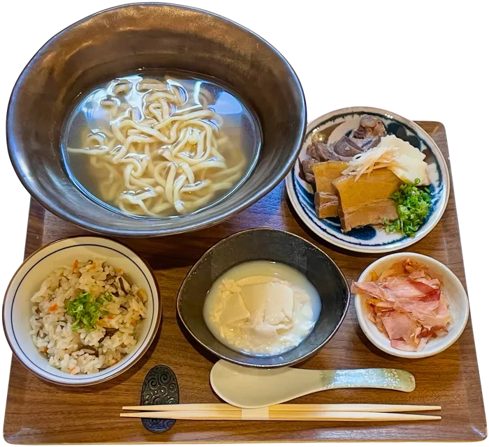
¥1,500税込
Special “Mine” Okinawa Soba SetA satisfying and popular set featuring tender soki (pork ribs), pork belly, and soft yushi tofu, served with a small bowl of jūshī, Okinawa-style seasoned rice. Extra noodles: +¥200
特製「嶺」沖繩麵套餐人氣滿分的豪華組合：包含柔嫩的豬肋排、三層肉、沖繩豆腐，並附上一碗小份的沖繩炊飯（以豬肉和蔬菜燜煮的風味飯）。加麵：另加¥200
長崎・枕崎産の鰹、いりこ、北海道産の昆布を丁寧に合わせ、夜の和食屋で培った出汁をベースに豚出汁を重ねました。やさしくすっきりとした中にも、深い旨みと上品な香りが広がります。
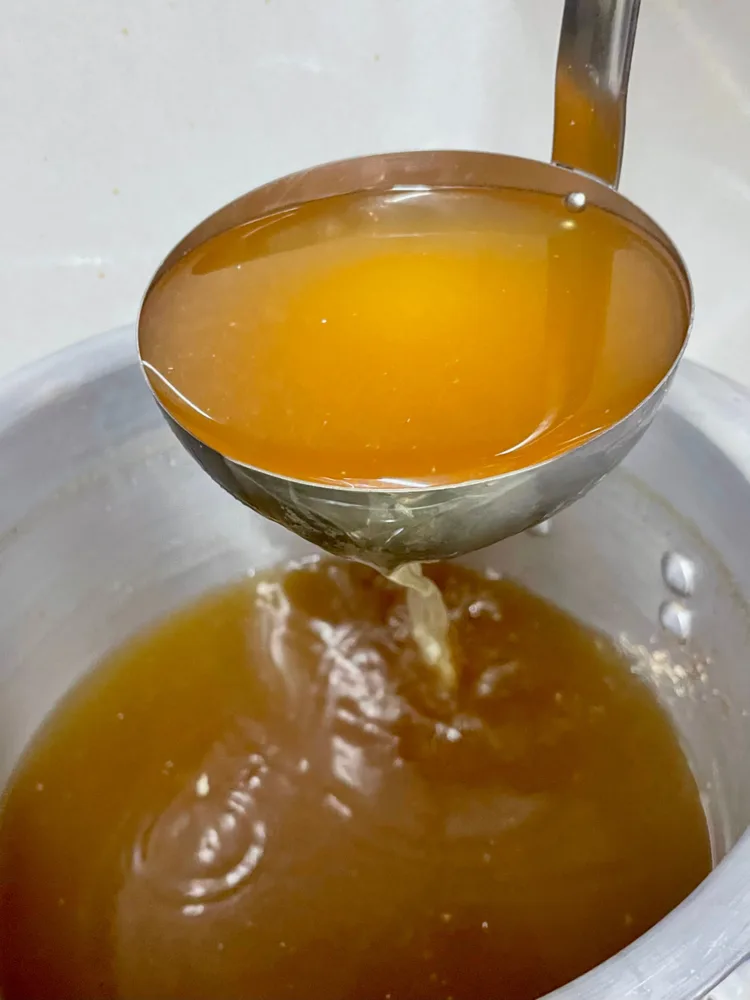
沖縄市・知念製麺所の生麺を使用。コシがあり、出汁との相性も抜群です。
あっさりとしたスープを引き立てるように、しっかりとしたコクと旨みを残しつつ、丁寧に味付けしています。
柔らかくなめらかな食感で、大豆の風味と旨みをしっかり感じる仕上がりとなっています。
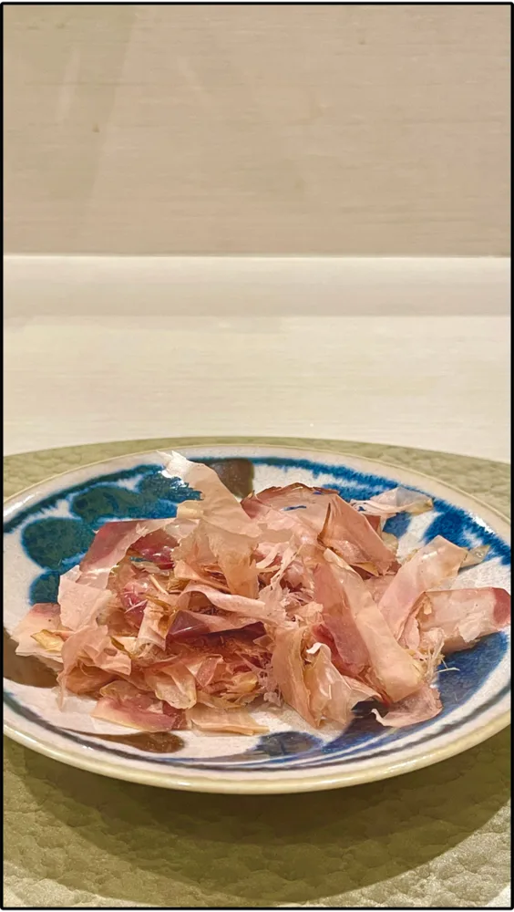
まずは入れずに、そのままの出汁の味わいをお楽しみください。その後、お好みのタイミングで加えていただくと、鰹の香りと旨みがより一層引き立ち、味わいの変化をお楽しみいただけます。
Dashi (broth) Katsuobushi from Nagasaki and Makurazaki, iriko (dried baby sardines) and kelp from Hokkaido, built on the Japanese stock perfected in our evening kitchen and layered with a rich pork broth. Light, yet deeply flavorful.
Noodles Fresh noodles by Chinen Seimenjo, a local noodle maker in Okinawa City. Firm and springy.
Pork belly and soki Seasoned carefully to keep a rich depth without overpowering the clean broth.
Yushi tofu Soft and silky, bringing out the natural flavor of soybeans.
Bonito flakes (served separately) Enjoy the broth as it is first. Then add the flakes whenever you like for a new layer of aroma.
本ソーキ・三枚肉・やわらかゆし豆腐の贅沢盛り。
¥1,300税込
Special “Mine” Okinawa SobaSoki (pork spare ribs), braised pork belly, and soft yushi tofu.
特製「嶺」沖繩麵豬肋排、滷三層肉與柔滑的沖繩豆腐。
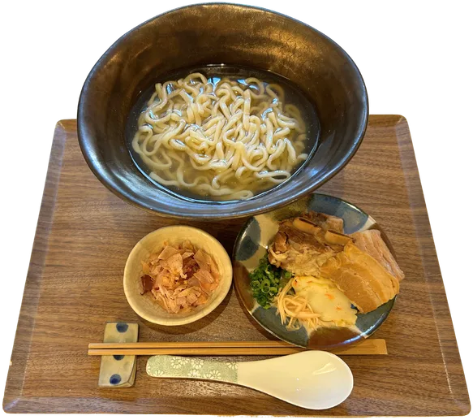
本ソーキと三枚肉の二種盛り。
¥1,100税込
“Mine” Okinawa SobaTopped with soki (pork spare ribs) and braised pork belly.
「嶺」沖繩麵雙拼配料：豬肋排與滷三層肉。
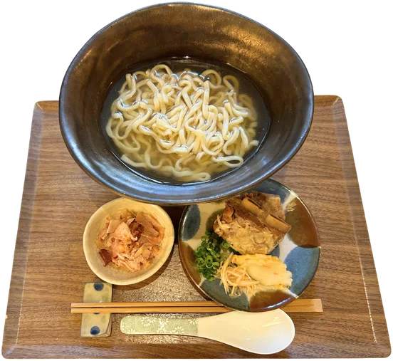
骨付きの本ソーキをじっくり煮込みました。
¥900税込
Soki Okinawa SobaTender pork spare ribs, slowly simmered to bring out their rich flavor.
豬肋排沖繩麵帶骨豬肋排慢火燉煮，充分釋放肉汁與香氣。
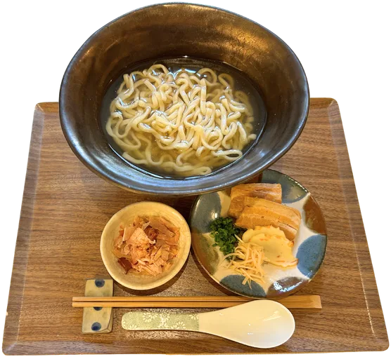
やわらかく煮込んだ三枚肉が味わえます。
¥800税込
Sanmai-niku Okinawa SobaTender, slow-braised pork belly with our signature soba.
三層肉沖繩麵可品嚐到柔嫩滷三層肉的美味。
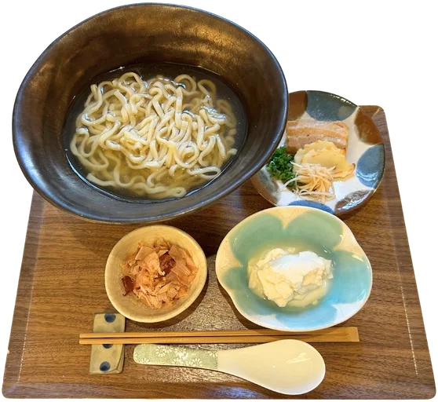
なめらかなゆし豆腐と三枚肉が味わえるそばです。
¥700税込
Soft Yushi-tofu Okinawa SobaA comforting bowl topped with silky yushi tofu and braised pork belly.
柔滑沖繩豆腐麵可品嚐到滑嫩的沖繩豆腐與滷三層肉。
麺の大盛りは、どのそばも二百円増しで承ります。Extra noodles: +¥200加麵：另加¥200
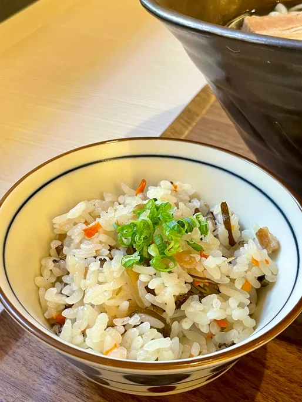
沖縄の家庭料理「じゅーしー」は、豚肉や野菜の旨みがしみ込んだ炊き込みご飯です。やさしい味わいで、そばとの相性も抜群です。
Jūshī (small / large)Okinawan-style seasoned rice cooked with pork and vegetables. Its light, savory flavor pairs perfectly with soba.
沖繩炊飯（小／大）以豬肉與蔬菜入味燉煮，風味溫潤，與沖繩麵最搭。
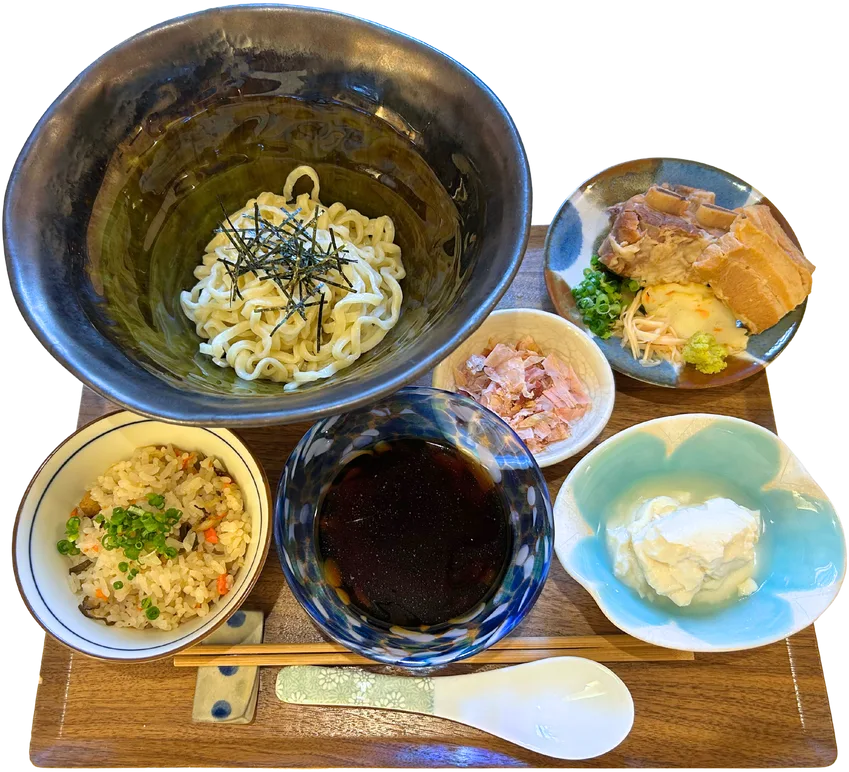
本ソーキ・三枚肉・やわらかゆし豆腐の贅沢盛りに、じゅーしー（小）がセットになった大満足の人気セット。
¥1,500税込
Chilled Special “Mine” Soba SetChilled dipping noodles with soki, pork belly and yushi tofu, served with a small bowl of jūshī.
冷沾麵 特製「嶺」套餐冷沾麵搭配豬肋排、三層肉、沖繩豆腐，並附小份沖繩炊飯。
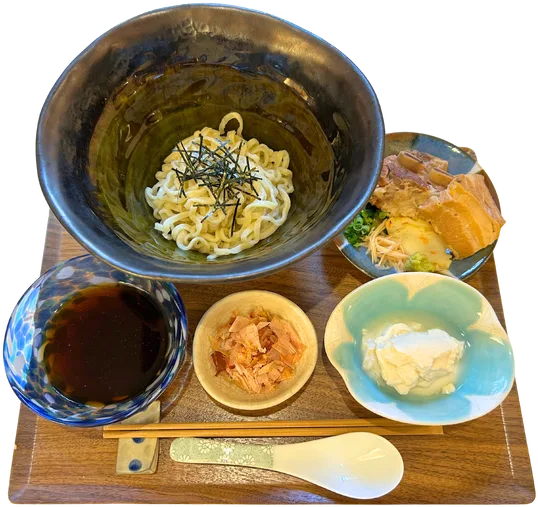
本ソーキ・三枚肉・やわらかゆし豆腐の贅沢盛り。
¥1,300税込
Chilled Special “Mine” SobaSoki, braised pork belly, and soft yushi tofu.
冷沾麵 特製「嶺」豬肋排、滷三層肉與沖繩豆腐。
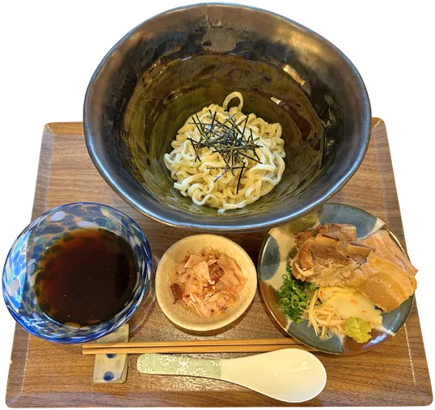
本ソーキと三枚肉の二種盛り。
¥1,100税込
Chilled “Mine” SobaSoki and braised pork belly.
冷沾麵「嶺」雙拼配料：豬肋排與滷三層肉。
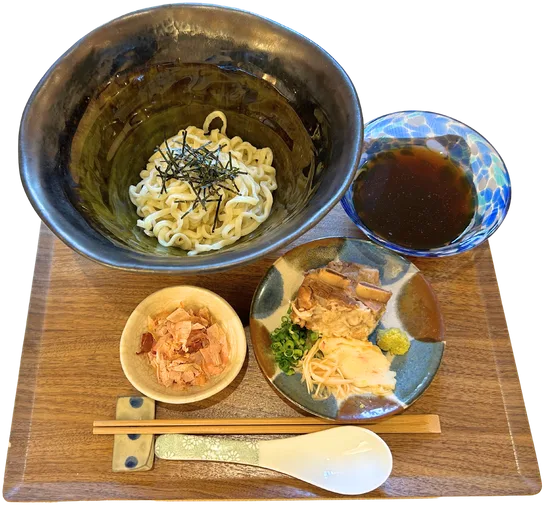
骨付きの本ソーキをじっくり煮込みました。
¥900税込
Chilled Soki SobaSlowly simmered pork spare ribs.
冷沾麵 豬肋排帶骨豬肋排慢火燉煮。
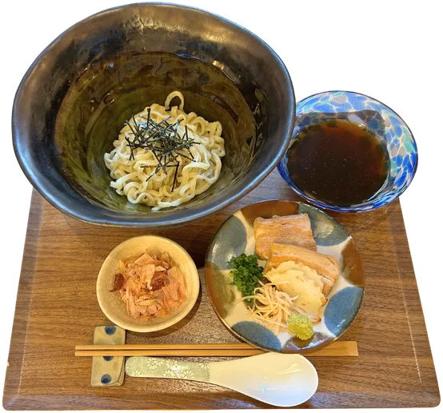
やわらかく煮込んだ三枚肉が味わえます。
¥800税込
Chilled Sanmai-niku SobaTender, slow-braised pork belly.
冷沾麵 三層肉柔嫩的滷三層肉。
お支払いは現金のみ、
前払いになります。
価格はすべて税込です。
Payment in cash only. Please pay in advance. All prices include tax.
僅接受現金付款，請於點餐時先行結帳。所有價格皆含稅。
日が暮れたら
京都祇園、東京、静岡で十年。旬の魚と季節の野菜を、ひと皿ずつ仕立てる和食コースと日本酒の時間です。
夜の和晩酌 嶺へIn the evening, we open as Wa Banshaku Mine, serving seasonal Japanese cuisine and sake.
© 沖縄そば 嶺 ／ 和晩酌 嶺 Produced by SearchMania Inc.